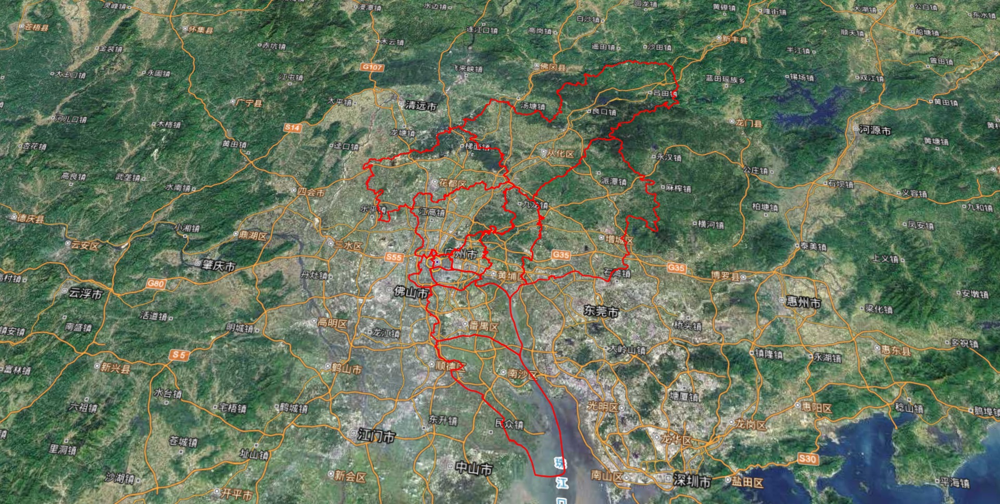

<!DOCTYPE html>
<html>
  <head>
    <title>视角书签</title>
    <meta charset="UTF-8">
	<link href="../Content/easyui/themes/default/easyui3.css" rel="stylesheet" type="text/css" />
	<link href="../Content/layui/css/layui.css" rel="stylesheet" type="text/css" />
	<script src="../Content/easyui/jquery.min.js" type="text/javascript"></script>
	<script src="../Content/easyui/jquery.easyui.min.js" type="text/javascript"></script>
    <style type="text/css">
		body {
			margin: 0;
			padding: 5px;
		}
		::-webkit-scrollbar {
			width: 8px;
			height: 8px;
			background-color: #F5F5F5;
		}
		::-webkit-scrollbar-track {
			-webkit-box-shadow: inset 0 0 6px rgba(0, 0, 0, 0.3);
			border-radius: 10px;
			background-color: #F5F5F5;
		}
		::-webkit-scrollbar-thumb {
			border-radius: 10px;
			-webkit-box-shadow: inset 0 0 6px rgba(0, 0, 0, .3);
			background-color: #555;
		}
		.datagrid-row-selected{
			background: rgba(30,36,50,.8);
		}
		.datagrid-row{height: 64px;}
	</style>
  </head>
  <body style="text-align: center; background-color:transparent;">
	<div class="layui-btn-group" style="margin-bottom: 5px;">
		<button title="新增" onclick="prompt()" type="button" class="layui-btn layui-btn-sm"><i class="layui-icon"></i></button>
		<button title="编辑" onclick="editRow()"  type="button" class="layui-btn layui-btn-sm"><i class="layui-icon"></i></button>
		<button title="删除" onclick="deleteRow()" type="button" class="layui-btn layui-btn-sm"><i class="layui-icon"></i></button>
		<button title="循环页" onclick="nextPage()" type="button" class="layui-btn layui-btn-sm"><i class="layui-icon"></i></button>
	</div>
  	<table id="dg"></table>
  </body>
  <script type="text/javascript">		
	$('#dg').datagrid({
	    columns:[[
			{field:'operation',title:'缩略图',width:64,align:'center',formatter:function(value,row,index){
		        var str = '';
		        return str;
			}},
			{field:'name',title:'视角名称',width:245,align:'center'},
			{field:'x',title:'x',width:45,align:'center',hidden:'true'},
			{field:'y',title:'y',width:45,align:'center',hidden:'true'},
			{field:'z',title:'z',width:45,align:'center',hidden:'true'},
			{field:'heading',title:'heading',width:45,align:'center',hidden:'true'},
			{field:'pitch',title:'pitch',width:45,align:'center',hidden:'true'},
			{field:'roll',title:'roll',width:45,align:'center',hidden:'true'}
	    ]],
	    data: [
			{name:'默认视角',x:113.571365,y:22.219232,z:278461.30,heading:6.182331311248233,pitch:-1.2036316616011966,roll:6.283184775092593}
		],
		onLoadSuccess:function(data){
	        
		},
		singleSelect:true,
		onClickRow:function(rowIndex, rowData){
			rowID = rowIndex;
			var jsonObj = {};
			jsonObj.x = rowData.x;
			jsonObj.y = rowData.y;
			jsonObj.z = rowData.z;
			jsonObj.heading = rowData.heading;
			jsonObj.pitch = rowData.pitch;
			jsonObj.roll = rowData.roll;
			parent.pGzznCore.FlyTo(jsonObj);
		}
  });
	function prompt(){
		$.messager.prompt('视角名称', '请输入视角名称！', function(r){
			if (r){
				var pJson = parent.pGzznCore.Screenshot();
				$('#dg').datagrid('appendRow',{name:r,x:pJson.x,y:pJson.y,z:pJson.z,heading:pJson.heading,pitch:pJson.pitch,roll:pJson.roll});
				$("img:last").attr('src',pJson.image);
			}
		});
	}
	var rowID = 0;
	function deleteRow(){
		$.messager.confirm('视角删除','是否要删除此视角?',function(r){
			if(r){
				var row = $('#dg').datagrid('getSelected');
				if(row != null){
					if(rowID != 0){
						$('#dg').datagrid('deleteRow',rowID);
					}
					else{
						alert("默认视角不可以删除！");
					}
				}
				else{
					alert("先选中视角记录！");
				}
			}
		});
	}
	function editRow(){
		var row = $('#dg').datagrid('getSelected');
		if(row != null){
			if(rowID != 0){
				$.messager.prompt('视角名称', '请输入视角名称！', function(r){
					if(r){
						let pJson = parent.pGzznCore.Screenshot();
						$('#dg').datagrid('updateRow',{index: rowID,row: {name:r,x:pJson.x,y:pJson.y,z:pJson.z,heading:pJson.heading,pitch:pJson.pitch,roll:pJson.roll}});
						$("img:last").attr('src',pJson.image);
					}
				});
				setTimeout(function(){
					$(".messager-input").val(row.name);
				},100);
			}
			else{
				alert("默认视角不可以编辑！");
			}
		}
		else{
			alert("先选中视角记录！");
		}
	}
	function nextPage(){
		//$('#dg').datagrid('loadData', { total: 0, rows: [] });
		
	}
	$.messager.defaults.ok ="确定";
	$.messager.defaults.cancel ="取消";
	</script>
</html>
